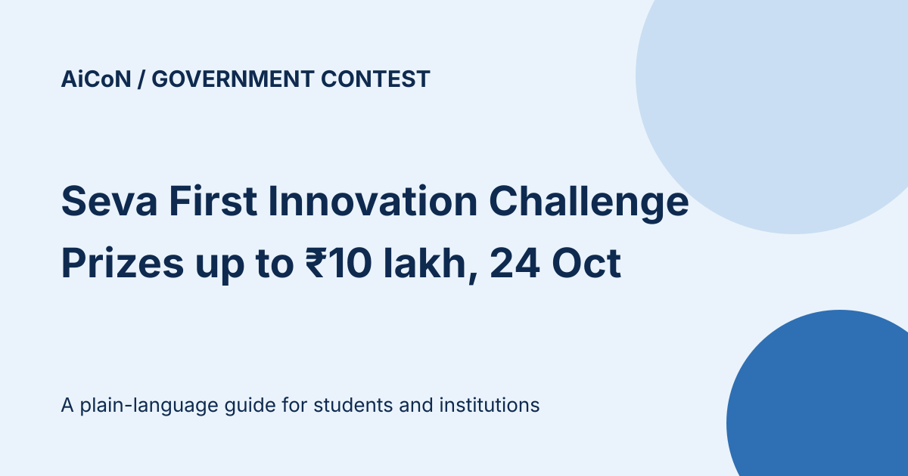

Seva First Innovation Challenge 2026: prizes up to ₹10 lakh, apply by 24 October
The Ministry of Education's Seva First Innovation Challenge (SFIC) 2026 invites students to build practical solutions to problems in their communities. The South Zone edition covers Kerala and Lakshadweep, with NIT Calicut as the nodal centre. First prize is ₹10 lakh. Submissions close on 24 October 2026, and students cannot register directly: your school, ITI, polytechnic or college has to do it.

What is the challenge?
SFIC was launched on 25 September 2026 by Union Education Minister Pralhad Joshi at IISc Bengaluru, as reported by the Press Information Bureau. It asks school students, ITI and polytechnic students, and college and university students to spot real problems around them and develop practical, scalable solutions. IISc Bengaluru is the South Zone nodal institute, supporting evaluation and mentorship across Karnataka, Tamil Nadu, Kerala, Andhra Pradesh, Telangana, Puducherry, the Andaman and Nicobar Islands and Lakshadweep. NIT Calicut has been named the nodal centre for Kerala and Lakshadweep.
Who can take part?
| Junior | School students. The portal text reads "up to Class VI to XII"; press coverage says Classes 6 to 12. |
|---|---|
| Technical | Students of Industrial Training Institutes (ITIs) and polytechnics. |
| Open | Undergraduate students and above, including postgraduate students and research scholars. |
Both tracks are open at every level: Track A for a product or technology solution, and Track B for a business model or governance solution. There are five themes: Swachh and Sustainable Bharat; Samriddh Annadata, Samriddh Bharat; Swasth and Samavesh Bharat; Shikshit and Kaushal Bharat; and Surakshit Bharat.
How do you apply?
Participation is institution-led. The official FAQ says a nominated coordinator registers the institution and nominates entries, and that students cannot register directly. The coordinator fills in the institution type, institute ID (UDISE or AISHE), name, state and district, plus coordinator details, and confirms the account with an 8-digit code sent to the official email. If you are a student, talk to your teacher, principal or innovation cell first.
Daily orientation and query sessions for institutions run from 12:00 PM to 1:00 PM and from 3:00 PM to 4:00 PM, per the portal.
What are the prizes?
- First prize: ₹10 lakh
- Second prize: ₹5 lakh
- Third prize: ₹3 lakh
Winners also get mentorship, incubation and support for adoption. A prize is not guaranteed for entering. Zonal evaluation selects the top 5 innovations per theme, which then get mentoring, bootcamps and field validation before the final evaluation by IISc.
Key dates
| Launch | 25 September 2026 |
|---|---|
| Submission window | 25 September to 24 October 2026 |
| State screening by NITs | From 25 October 2026 |
| Exhibition and finale | 30 November to 15 December 2026 (home page), and 10 to 17 December 2026 at IISc Bengaluru (FAQ) |
Two things the official portal does not make clear
- Prize unit. The FAQ says the ₹10 / ₹5 / ₹3 lakh prizes are in each of the five themes. The home page says they apply to each category (School, ITI/Polytechnic, University/Colleges). Ask your institution or the nodal centre which applies before you quote a total.
- Finale dates. The home page and the FAQ give different finale windows, and the PIB release says the finale is in New Delhi in December 2026 while the FAQ says IISc Bengaluru. Treat the finale date as not yet settled.
A careful checklist
- Open sevafirst.mic.gov.in yourself. Do not use forwarded links.
- Ask your institution's coordinator whether it is registered. Students cannot register alone.
- Pick a theme and track, and write down the real problem you observed.
- Finish your submission before 24 October 2026, and ask your coordinator to confirm the exact cut-off time.
- Do not share Aadhaar or other personal details on any site that is not the official portal.
We did not register, log in or submit anything. The institution dashboard and submission forms were not tested.
Frequently asked questions
Can a student register directly?
No. The official FAQ says participation is institution-led and students cannot register directly.
Is it only for Kerala?
No. It is a South Zone edition covering eight states and Union Territories, including Kerala and Lakshadweep. This guide focuses on that edition.
Is the total prize pool 5.4 crore?
Press coverage quotes a ₹5.4 crore pool, citing Ministry of Education promotional material. We could not confirm it on the official portal or the PIB release, so we do not rely on it.
Sources: Official SFIC portal · PIB release, 25 September 2026 · NIT Calicut launch note. Checked 7 and 8 October 2026. This is an AiCoN explainer, not a government publication.